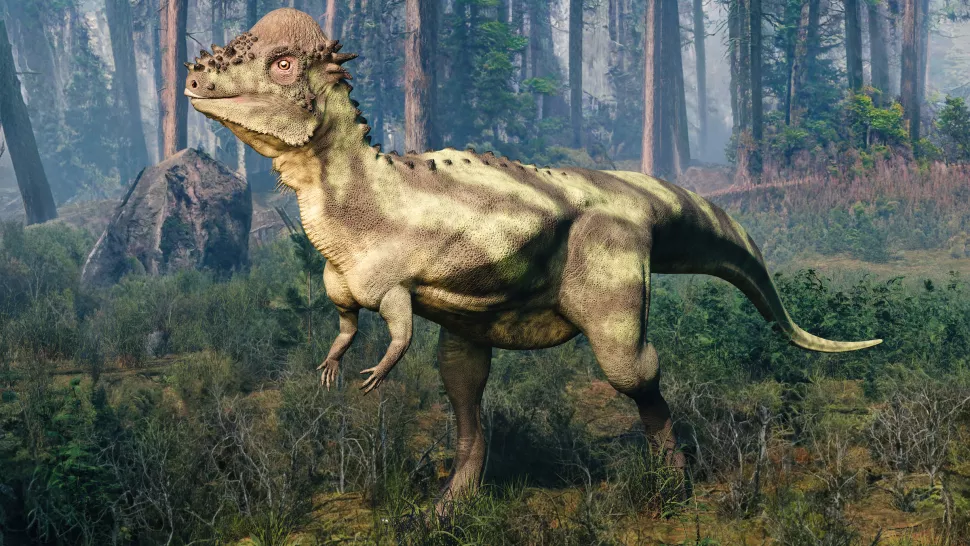

Пахицефалозавры
Пахицефалозавры (лат. Pachycephalosauria) — инфраотряд растительноядных динозавров из клады Marginocephalia. Представители группы обитали с берриасского по маастрихтский века (145—66 млн лет назад) на территориях нынешних Азии и Северной Америки. На 2016 год включает 15 известных родов.
Название впервые было использовано польским палеонтологом Хальшкой Осмульской в 1974 году, но до сих пор точного таксономического определения данной группе не дано. В 1998 году Пол Серено предложил следующее определение: все виды, которые менее тесно связаны с трицератопсом, чем с Pachycephalosaurus. Вагнер в 2004 году в своём обзоре The Dinosauria дал другое определение: все виды, связанные с Pachycephalosaurus wyomingensis и Triceratops horridus. В 2005 году Серено дал более сложное определение: все виды, более тесно связанные с Pachycephalosaurus wyomingensis, чем с Heterodontosaurus foxii, Ankylosaurus magniventris, Stegosaurus armatus, Iguanodon bernissartensis и Ceratops montanus. Определение данной группы осложняется из-за многих неопределённостей внутренних взаимоотношений видов в отряде птицетазовых динозавров.
Классификация пахицефалозавров
- Пахицефалозавриды